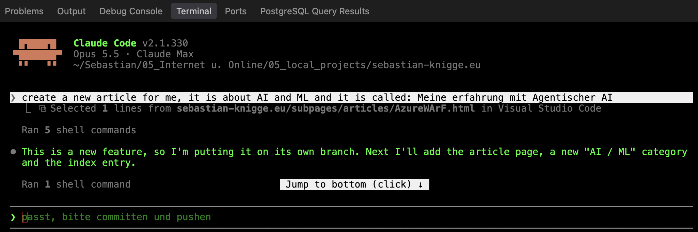
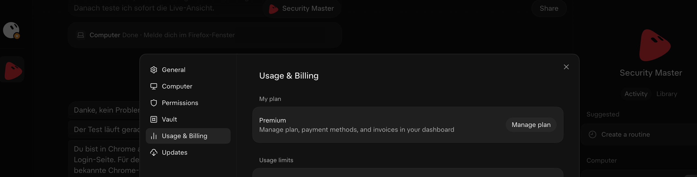

22. November 2026 AI / ML English version

Über 100 € im Monat für KI und trotzdem mehr Arbeit?
Ich erkläre, warum Claude und Grok nicht Bürokratie abnehmen, sondern meistens den Nutzer beschäftigen.
„Ich lege dir das gleich in den Chat, nachdem wir fertig gesprochen haben.“
Das sagt mein KI-Agent, während ich mit ihm spreche wie mit einem Mitarbeiter am Telefon. Das klingt nach Zukunft, aber später öffne ich den Chat und der ist leer. Ich frage nach, ob da nicht noch etwas fehlt. Was dann kommt, ist allerdings nur die Hälfte.
Willkommen in meinem Alltag mit KI-Agenten. Seit einigen Monaten nutze ich nun intensiv agentische KI im Alltag. Dafür gebe ich inzwischen insgesamt deutlich über 100 € im Monat aus.
Meine Erwartung: KI gegen den Amtsschimmel
Sowohl privat als auch in der Arbeit habe ich die unterschiedlichsten Aufgaben. Ein großer Teil meiner Zeit geht nicht in Technik, sondern in Dokumentation, Protokolle und Nachweise. Also unter das bürokratische Joch, das uns Europäern immer mehr übergestülpt wurde und weiterhin wird.
Meine Hoffnung war einfach, dass KI mir das abnehmen kann: Protokolle führen, Dokumente pflegen, Abläufe automatisieren. Ich habe mir vorgestellt, damit den Amtsschimmel zu zähmen, ihn vielleicht sogar teilweise abzuwerfen. Aber leider kam es doch etwas anders.
Claude ist zwar brillant, kommt mir aber vor wie ein Beamter
Fairerweise zuerst das Positive, denn Claude ist stark. Beim Programmieren, bei Recherchen und bei Entwürfen für E-Mails und Dokumente spart es mir durchaus Zeit und überrascht mich häufig mit Ideen, auf die ich selbst nicht gekommen wäre. Ich habe der KI Abläufe beigebracht, Jobs eingerichtet und eigene Skills erstellt, die sie nutzt, um Aufgaben so zu erledigen, wie ich es will.
Und genau da kommt es zum Problem. Es hilft zwar teilweise, Aufgaben zu formalisieren, aber wenn man eben alles vorher im Detail beschreiben muss, steht die Arbeit dem, was man damit erreichen möchte, kaum mehr entgegen. Mal funktioniert etwas, und mal funktioniert etwas so gut, dass man der KI mehr zutraut, autonom zu arbeiten, und dann ist es wieder genau umgekehrt. Man kann das nur sehr schwer abschätzen.
Noch frustrierender sind die Momente, in denen Claude mich sehr gut versteht, aber trotzdem nicht tut, was ich sage. Zum Beispiel:
Ich führe ein Protokoll, in dem etwas im 72-Stunden-Abstand erledigt werden soll. Habe ich den Abstand überschritten, soll Claude den Zeitraum so aufteilen, dass er dem 72-Stunden-Intervall entspricht. Das würde wirklich jeder Mitarbeiter schaffen, aber Claude antwortet: „Das kann ich leider nicht tun.“
Für Claude riecht das nach Rückdatierung, und er wittert nicht regelkonformes Verhalten.
Ich bin mir nicht sicher, ob sich dahinter EU-Auflagen oder selbst auferlegte Regeln verbergen. Jedenfalls ist es mühsam, erst seine KI überzeugen zu müssen, dass man nichts Illegales im Sinn hat. Hier bremst dich die KI als Nutzer und wird sogar zum verlängerten Arm der Behörden, mit Zugang zu potenziell sensiblen Daten.
Warum ich Grok eine Chance gegeben habe
Elon Musk wirkt auf mich wie jemand, der sich auch gern einmal mit der Obrigkeit anlegen würde, wenn es zum Vorteil der Nutzer ist. Also habe ich GrokBot eine Chance gegeben.
Die Lösung verspricht, dass jeder Agent einen eigenen Rechner in der Cloud bedient und so noch autonomer arbeitet, auch wenn mein Laptop offline ist. Sogenannte Always-on-Agenten können auf Ereignisse reagieren, zum Beispiel wenn eine E-Mail im Postfach landet.

Und das ist für mich eine große Stärke von KI. KI soll Aufgaben verteilen können, während ich Auto fahre oder unterwegs bin. Für rund 30 € im Monat war Grok in einem Abo enthalten. Das ist ein fairer Preis für einen digitalen Mitarbeiter, und hier würde ich gleich beliebig viele bekommen.
Die Szene vom Anfang hat mich dann eines Besseren belehrt. Die Übergabe vom Gespräch in den Chat funktioniert nicht gut. Was „im Telefonat“ versprochen wird, kommt nicht oder nur zur Hälfte an. Darüber hinaus ist man an gewisse Betriebssysteme gebunden, zum Beispiel Linux. Der Agent bricht häufig ab und versucht nicht selbstständig, ein Problem aus verschiedenen Perspektiven zu lösen. Häufig muss man selbst eingreifen und den Bildschirm steuern, um zum Beispiel eine Anmeldung zu vervollständigen. Die Zahl der Connectoren ist deutlich eingeschränkter als bei Claude, zumindest denkt das der Agent im ersten Moment, und er schlägt nicht vor, einen Connector zu installieren, obwohl es theoretisch möglich ist. Der digitale Mitarbeiter braucht mich ständig und arbeitet nahezu nicht autonom.
Einen Lichtblick gibt es trotzdem
Ein Bereich hat überraschend gut funktioniert: E-Mails prüfen und verschicken per Sprache klappt mit GrokBot ausgezeichnet. Ich nutze Claude zur Formulierung der E-Mails, die ich dann wiederum mit dem Sprachassistenten von GrokBot prüfe, gegebenenfalls verbessere und automatisch verschicken lasse. In diesen Momenten fühlt sich KI wie ein echter Assistent an und nimmt mir wirklich Arbeit ab, während die Qualität steigt.
Ich habe trotzdem gekündigt
Trotz des Lichtblicks habe ich Grok gekündigt. Denn ich zahle inzwischen deutlich über 100 € im Monat für KI, die mir bei Weitem nicht so viel Arbeit abnimmt, wie ich erwartet habe. Einschließlich der Zeit, die ich dafür aufwende, rechnet sich das für mich (noch) nicht. Aber wer weiß, vielleicht ist das in ein paar Monaten oder Wochen schon wieder anders.
Mein Fazit: Was KI heute wirklich kann
KI hilft mir heute schon ausgezeichnet beim Programmieren, bei Recherchen, bei Entwürfen und kleinen Artefakten. Wo sie gut eingebunden ist, wie bei Excel oder meinem E-Mail-Ablauf, spart sie Zeit und ist angenehm.
Einen digitalen Mitarbeiter, der selbstständig Bürokratie abarbeitet, gibt es noch nicht. Für wichtige Dinge, und dazu zählen auch manche Programmieraufgaben, zahlt es sich für mich weiterhin aus, selbst zu arbeiten.
Damit es sich für mich rentiert, müssen sich zwei Dinge ändern: Agenten müssen verlässlicher autonom arbeiten, ohne Rückfragen, und KI muss Nutzern zutrauen, die gestellte Aufgabe selbst zu beurteilen, und ihr folgen, statt immer zu zweifeln und zu widersprechen.
Bis dahin bleibt der Amtsschimmel vorerst, aber vielleicht kann man ihn ja anders überlisten.